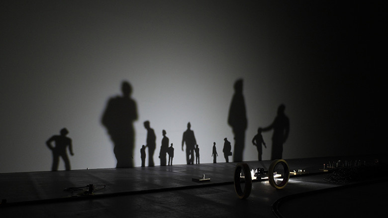

idea

クワクボ・リョウタ
https://www.youtube.com/watch?v=8EBF0qOKpns-どんな人
光源を積んだ鉄道模型を走らせ、周囲に配した日常品の影が幻想的に移ろっていくインスタレーション作品をつくっています。他にも、電子回路を用いたガジェット系作品なども制作しています。
-解説
レール上を走る鉄道模型には、光源が搭載されています。レールのまわりには、小さな人の模型、洗濯バサミ、電球、鉛筆などが置かれ、光が当たることで、幻想的な影が映し出されます。
-好きなところ
日常にあるようなものが、動く光源によって幻想的な一つの風景へと変貌する。見せ方一つを工夫することで、こうした面白い表現ができるのはすごいと思いました。